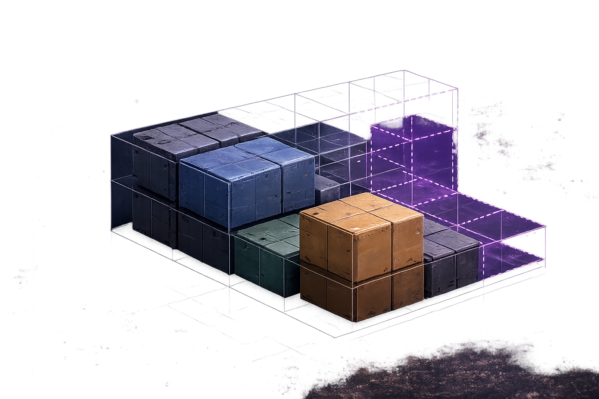

“Mission Control, docking alignment requires twelve manual corrections before every cargo transfer.”
MISSION CONTROL BRIEFING
Lost in
Translation
Merchandising Technical Work for Impact
Incoming transmission
 MISSION CONTROL
MISSION CONTROLMESSAGE RECEIVED
MEANING UNCLEAR
Please clarify.
The translation
Same work.
Clearer meaning.
Docking alignment requires twelve manual corrections before every cargo transfer.CONTEXT INCOMPLETE
If we spend one six-hour EVA redesigning the sequence now, we can make future cargo transfers predictable and protect upcoming mission schedules.
Impact clearInvestment visibleNext step understood
WHAT CHANGED?
The work didn’t change. The translation did.
Clear translation makes useful discussion possible.Every role sees a signal
Software EngineerArchitecture is constraining change.
Design EngineerThe crew workflow creates friction.
QA EngineerThe same regression pattern repeats.
DevSecOps EngineerOperational risk is increasing.
Product ManagerMission schedules are less predictable.
SHARED
OPPORTUNITY
OPPORTUNITY
We see the signals. Clarifying them turns observation into understanding and impact.
Merchandising, redefined
The launch manifest has limited capacity.
LAUNCH MANIFESTLIMITED CAPACITY
Customer capabilityMANIFESTED
Reliability improvementMANIFESTED
Docking sequenceCANDIDATE
Secondary enhancementNOT MANIFESTED

Clarify the signal
Clarity begins with curiosity.
The best questions uncover the meaning behind the message.
01What’s the real need?
02What outcome are we trying to achieve?
03Who needs to understand it?
04What will it take to achieve that outcome?
05How will we create opportunities for understanding?
The Four Ps begin with a signal
The Four Ps begin with a signal.
Every proposal starts as something someone has noticed. The Four Ps help turn that signal into something people can understand and act on.
THE SIGNALWhat have we noticed?
Product — what are you really offering?

Redesigned sequence
Fewer corrections
Predictable docking
Faster cargo transfer
More mission time
The product is often what your work makes possible, not what gets built.
Place — meet the audience where they are
SAME SIGNALDocking requires twelve manual corrections.
Same truth. Different audience. Different translation.
Price — make the investment visible
CREW2 engineers
TIME1 EVA / 6 hours
TRADEOFFRoutine maintenance shifts
EXPECTED RETURNPredictable future docking
We are asking for one six-hour EVA now so future cargo transfers become predictable, while temporarily shifting routine maintenance.
A persuasive request makes both the investment and the tradeoff visible.
Promotion — momentum is intentional
Engineering review
Mission brief
Planning
Demo
Status update
Repetition→Recognition→Understanding→Alignment→Momentum
Momentum is earned through clarity and repetition, not volume.
A practical translation toolkit
SIGNALWhat have we noticed?
IMPACTWho or what is affected?
OUTCOMEWhat becomes different?
INVESTMENTWhat are we asking for?
EVIDENCEWhat supports the signal?
NEXT STEPWhat should happen now?
This is not paperwork. It is thinking made visible.
From request to useful discussion
We should redesign the docking sequence because it is difficult to maintain.
CONTEXT INCOMPLETEEvery cargo transfer now requires twelve manual corrections, creating schedule risk. We propose one focused EVA before the next mission to make future docking predictable.
READY FOR DISCUSSIONClear translation does not guarantee agreement. It makes useful discussion possible.
Mission simulation
Bring your own signal.
Choose real work that deserves greater awareness, support, or momentum.
Technical constraintCustomer opportunityQuality concernDesign improvementOperational riskProcess change
Choose one signal.Merchandise it for one audience.
Mission canvas
Practice makes better requests.
Run a quick simulation. Turn a vague request into one that drives action.
⌁SIGNALWhat have you noticed?
◇PRODUCTWhat outcome are you offering?
◎PLACEWho needs to understand?
$PRICEWhat investment or tradeoff?
▷PROMOTIONWhere should this appear again?
▥EVIDENCEWhat do you know or infer?
?ASKWhat should happen next?

Which question would you ask first to clarify this signal?
05:00
Crew debrief
Who discovered something about their own idea?
What was your signal?
What outcome did you identify?
Who needs to understand it?
What are you asking for?
What changed as you translated it?
The shared language
SIGNAL
TRANSLATION
UNDERSTANDING
MOMENTUM
What mission are you asking people to approve?
Every mission begins with someone noticing a signal.
Make sure the rest of us can see it too.